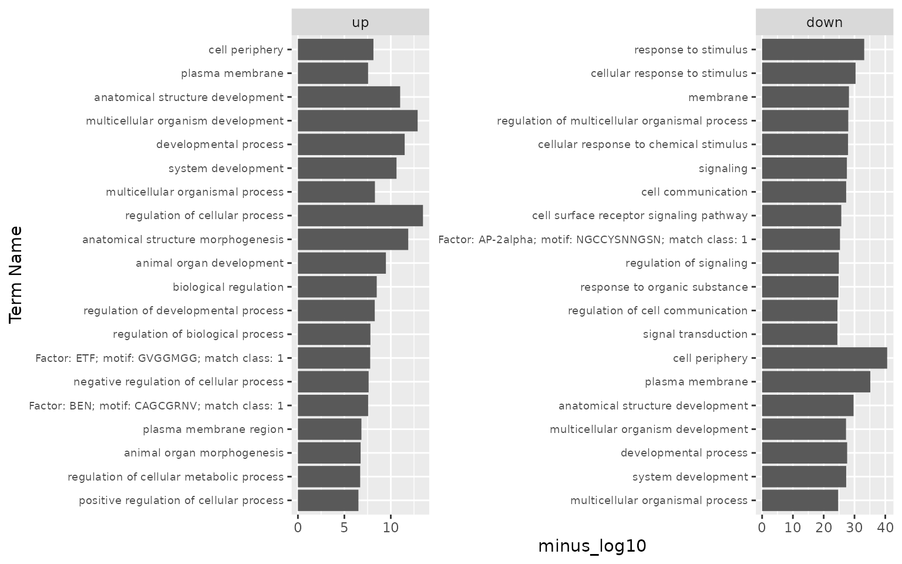
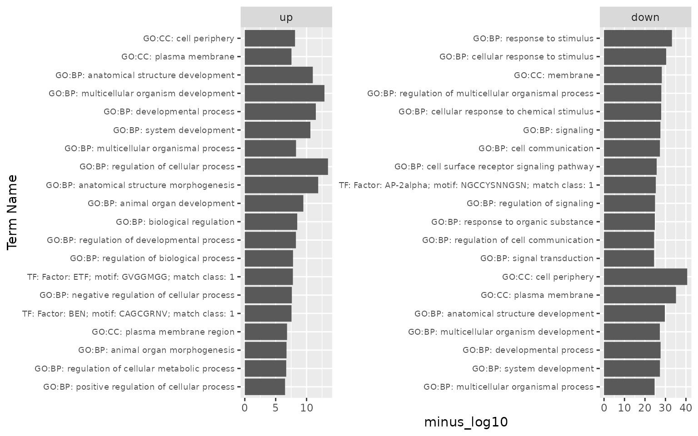
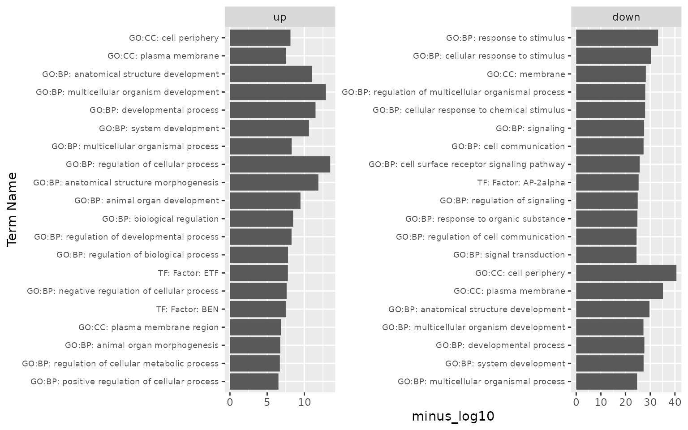

Class 12: Working with gene lists
Rui Fu & Austin Gillen
2022-07-06
Source:vignettes/class-12.Rmd
class-12.Rmd
# run before class:
# devtools::install_github('rnabioco/practical-data-analysis')
# BiocManager::install("biomaRt")
library(pbda)
library(tidyverse)
library(cowplot)
library(gprofiler2)Did experiment, ran through analysis pipeline, what now?
Handle gene lists
Try to connect prior knowledge to the results (genes you study, GO terms, or something like yeast_prot_prop)
Using some basic R and tibble manipulation commands
Retrieve gene lists from RNA-seq or scRNA-seq
Recall how data is saved in objects
Or whatever file you already saved containing lists of gene names
# from DESeq2 output, get a tibble back
# res <- results(dds)
# saveRDS(res, "res_class4.rds") # save any object from environment for next time
loc <- system.file("extdata", "res_class4.rds", package = 'pbda')
res <- readRDS(loc) # loading a DESeq2 object automatically loads DESeq2
head(res) # basically a dataframe
#> log2 fold change (MLE): drug none vs A
#> Wald test p-value: drug none vs A
#> DataFrame with 6 rows and 6 columns
#> baseMean log2FoldChange lfcSE stat pvalue
#> <numeric> <numeric> <numeric> <numeric> <numeric>
#> WASH7P 10.003052 -0.121047 0.697033 -0.173661 8.62132e-01
#> MIR6859-1 1.707291 -0.496551 1.507128 -0.329468 7.41802e-01
#> LOC101927589 0.237587 -1.610617 4.370506 -0.368520 7.12486e-01
#> LOC729737 164.730908 -1.566207 0.264046 -5.931574 3.00045e-09
#> LOC100996442 0.456231 -1.575791 2.977488 -0.529235 5.96642e-01
#> LOC102723897 139.842022 -0.373916 0.214065 -1.746742 8.06821e-02
#> padj
#> <numeric>
#> WASH7P 9.22818e-01
#> MIR6859-1 8.44449e-01
#> LOC101927589 NA
#> LOC729737 5.67484e-08
#> LOC100996442 NA
#> LOC102723897 1.81200e-01
res_tibble <- as_tibble(res, rownames = "gene")
res_tibble
#> # A tibble: 21,178 × 7
#> gene baseMean log2FoldChange lfcSE stat pvalue padj
#> <chr> <dbl> <dbl> <dbl> <dbl> <dbl> <dbl>
#> 1 WASH7P 10.0 -0.121 0.697 -0.174 8.62e-1 9.23e-1
#> 2 MIR6859-1 1.71 -0.497 1.51 -0.329 7.42e-1 8.44e-1
#> 3 LOC101927589 0.238 -1.61 4.37 -0.369 7.12e-1 NA
#> 4 LOC729737 165. -1.57 0.264 -5.93 3.00e-9 5.67e-8
#> 5 LOC100996442 0.456 -1.58 2.98 -0.529 5.97e-1 NA
#> 6 LOC102723897 140. -0.374 0.214 -1.75 8.07e-2 1.81e-1
#> 7 LOC101929192 0.451 -1.58 3.00 -0.525 5.99e-1 NA
#> 8 RP4-669L17.10 1.62 -1.13 1.41 -0.801 4.23e-1 5.94e-1
#> 9 LOC100134822 8.57 0.328 0.723 0.454 6.50e-1 7.80e-1
#> 10 MIR6723 0.616 -0.736 3.22 -0.229 8.19e-1 NA
#> # … with 21,168 more rows
# res_tibble contains calculations for all genes, pick out "interesting" genes
gene_tibble <- res_tibble %>%
filter(!is.na(padj)) %>% # NA values from padj are from tossing low expressing genes
filter(padj <= 0.01) %>% # padj <= 0.05 is common, or 0.01, sometimes even 0.1 is acceptable
filter(log2FoldChange >= 1 | log2FoldChange <= -1) %>%
arrange(desc(log2FoldChange))
gene_tibble
#> # A tibble: 1,908 × 7
#> gene baseMean log2FoldChange lfcSE stat pvalue padj
#> <chr> <dbl> <dbl> <dbl> <dbl> <dbl> <dbl>
#> 1 MAGEC2 133. 11.2 1.20 9.33 1.06e- 20 9.57e- 19
#> 2 PAGE5 76.5 10.7 1.20 8.90 5.57e- 19 4.23e- 17
#> 3 PGR 1732. 9.44 0.316 29.9 9.03e-197 7.88e-193
#> 4 FAM133A 27.2 9.24 1.24 7.44 1.01e- 13 4.05e- 12
#> 5 ZFP3 61.4 9.15 1.21 7.54 4.64e- 14 1.96e- 12
#> 6 GREB1 2343. 9.08 0.303 29.9 8.27e-197 7.88e-193
#> 7 LOC102724756 18.0 8.66 1.29 6.69 2.25e- 11 5.99e- 10
#> 8 CYP2B7P 1839. 8.58 0.336 25.5 1.94e-143 8.47e-140
#> 9 CTAG2 153. 8.31 0.675 12.3 7.76e- 35 2.46e- 32
#> 10 TMLHE 188. 8.25 1.05 7.88 3.34e- 15 1.62e- 13
#> # … with 1,898 more rows
# get top 10 down-regulated genes
gene_tibble_down10 <- gene_tibble %>%
filter(log2FoldChange < 0) %>%
arrange(log2FoldChange) %>%
dplyr::slice(1:10)
# get a vector of gene names
gene_vector <- gene_tibble$gene
gene_vector <- gene_tibble %>% pull(gene) # at least 5 more ways to do this
write_csv(gene_tibble, "gene_tibble.csv")
# or load already saved file on disk
loc <- system.file("extdata", "gene_tibble.csv", package = 'pbda')
gene_tibble2 <- read_csv(loc) # reads out as tibble
# or write as txt file, without col name
write_csv(gene_tibble %>% select(gene), "gene_tibble.txt", col_names = FALSE) # write from tibble
write_lines(gene_vector, "gene_tibble_v.txt") # write for vectorGene set enrichment: feed gene lists to g:Profiler, get enrichment score back
g:Profiler https://biit.cs.ut.ee/gprofiler/
Here we consider the simple case of single, unordered lists of significantly differentially expressed human genes. g:Profiler can also handle ordered lists, other species, multiple lists in the same query, arbitry thresholds, several different multiple testing correction methods, arbitrary source selection, and much more.
# generate lists of singificantly up/downregulated genes from the RNA-seq example
upregulated_genes <- gene_tibble %>%
filter(log2FoldChange >= 1, padj <= 0.01) %>%
pull(gene)
downregulated_genes <- gene_tibble %>%
filter(log2FoldChange <= -1, padj <= 0.01) %>%
pull(gene)
# gost: gene list functional enrichment (for unordered human lists, only the list is required)
gost_up <- gost(upregulated_genes,
organism = "hsapiens",
ordered_query = FALSE
)
gost_down <- gost(downregulated_genes,
organism = "hsapiens",
ordered_query = FALSE)
# inspect the resulting gost output:
# meta slot contains information about the query, results and gene mapping
# All three print pretty unweildy lists, but can be very useful for troubleshooting
# gost_up$meta$query_metadata
# gost_up$meta$result_metadata
# gost_up$meta$genes_metadata
# result slot contains the enrichment information
as_tibble(gost_up$result)
#> # A tibble: 235 × 14
#> query significant p_value term_size query_size intersection_size
#> <chr> <lgl> <dbl> <int> <int> <int>
#> 1 query_1 TRUE 3.42e-14 11193 615 428
#> 2 query_1 TRUE 1.28e-13 4768 615 229
#> 3 query_1 TRUE 1.32e-12 2702 615 151
#> 4 query_1 TRUE 3.19e-12 6317 615 276
#> 5 query_1 TRUE 9.83e-12 5754 615 256
#> 6 query_1 TRUE 2.42e-11 4313 615 206
#> 7 query_1 TRUE 3.36e-10 3513 615 174
#> 8 query_1 TRUE 3.26e- 9 13001 615 460
#> 9 query_1 TRUE 5.11e- 9 7354 615 297
#> 10 query_1 TRUE 5.33e- 9 2425 615 130
#> # … with 225 more rows, and 8 more variables: precision <dbl>,
#> # recall <dbl>, term_id <chr>, source <chr>, term_name <chr>,
#> # effective_domain_size <int>, source_order <int>, parents <list>
# for a quick look a the results, we can plot the -log10 of top 20 entries in both lists
gost_log <- bind_rows(
as_tibble(gost_up$result) %>%
mutate(list = "up"),
as_tibble(gost_down$result) %>%
mutate(list = "down")
) %>%
mutate(minus_log10 = -log10(p_value),
list = factor(list, levels = c("up", "down"))) %>%
group_by(list) %>%
arrange(desc(minus_log10)) %>%
dplyr::slice(1:20)
gost_log %>% select(list, term_name, minus_log10)
#> # A tibble: 40 × 3
#> # Groups: list [2]
#> list term_name minus_log10
#> <fct> <chr> <dbl>
#> 1 up regulation of cellular process 13.5
#> 2 up multicellular organism development 12.9
#> 3 up anatomical structure morphogenesis 11.9
#> 4 up developmental process 11.5
#> 5 up anatomical structure development 11.0
#> 6 up system development 10.6
#> 7 up animal organ development 9.47
#> 8 up biological regulation 8.49
#> 9 up multicellular organismal process 8.29
#> 10 up regulation of developmental process 8.27
#> # … with 30 more rows
ggplot(gost_log, aes(x = reorder(term_name, minus_log10), y = minus_log10)) + #reorder Term by minus_log10
geom_bar(stat = "identity") + # otherwise ggplot tries to count
xlab("Term Name") +
facet_wrap(~list, scales = "free") +
coord_flip() +
theme(axis.text.y = element_text(size = 7))
# adding source information for the enriched terms can also help with interpretation:
gost_log <- gost_log %>% mutate(term_name = paste(source,term_name, sep = ": ")) %>% select(list, term_name, minus_log10)
ggplot(gost_log, aes(x = reorder(term_name, minus_log10), y = minus_log10)) + #reorder Term by minus_log10
geom_bar(stat = "identity") + # otherwise ggplot tries to count
xlab("Term Name") +
facet_wrap(~list, scales = "free") +
coord_flip() +
theme(axis.text.y = element_text(size = 7))
other options:
Panther http://www.geneontology.org/page/go-enrichment-analysis
GSEA (requires ranked list, for instance by fold-change, and requires full list of genes instead of just “significant”) http://software.broadinstitute.org/gsea/index.jsp
or, GO and GSEA right in R (will require additional packages):
topGO: https://bioconductor.org/packages/release/bioc/html/topGO.html
fgsea: http://bioconductor.org/packages/release/bioc/html/fgsea.html
Sometimes transformation of names is needed - stringr package, part of tidyverse
Depending on the transcriptome and analysis options used in RNA-seq/scRNA-seq, the list of names can be messy.
loc <- system.file("extdata", "ensg_tibble.csv", package = 'pbda')
ensg_tibble <- read_csv(loc)
ensg_tibble # those version numbers are often not recognized by software
#> # A tibble: 5 × 2
#> gene padj
#> <chr> <dbl>
#> 1 ENSG00000238164.4 0.0001
#> 2 ENSG00000049249.6 0.0002
#> 3 ENSG00000226823.1 0.0001
#> 4 ENSG00000266470.1 0.0002
#> 5 ENSG00000229435.2 0.05str_replace: find and replace (run ?str_replace for documentation)
ensg_tibble_rm <- ensg_tibble %>% mutate(gene = str_replace(gene,
pattern = "ENSG",
replacement = "#"))
ensg_tibble_rm
#> # A tibble: 5 × 2
#> gene padj
#> <chr> <dbl>
#> 1 #00000238164.4 0.0001
#> 2 #00000049249.6 0.0002
#> 3 #00000226823.1 0.0001
#> 4 #00000266470.1 0.0002
#> 5 #00000229435.2 0.05
# trimming of gene/transcript version
ensg_tibble2 <- ensg_tibble %>% mutate(gene_new = str_replace(gene,
pattern = "\\..*", # . and everything after
replacement = "")) # empty string
# regular expressions are useful and worth the time to learn, see ?base::regex
ensg_tibble2
#> # A tibble: 5 × 3
#> gene padj gene_new
#> <chr> <dbl> <chr>
#> 1 ENSG00000238164.4 0.0001 ENSG00000238164
#> 2 ENSG00000049249.6 0.0002 ENSG00000049249
#> 3 ENSG00000226823.1 0.0001 ENSG00000226823
#> 4 ENSG00000266470.1 0.0002 ENSG00000266470
#> 5 ENSG00000229435.2 0.05 ENSG00000229435
# `separate` works too, if you want to keep the info
ensg_tibble3 <- ensg_tibble %>% separate(gene, into = c("gene", "version"), sep = "\\.")
# revisit the gprofiler output plot, clean up "term_name" column, stripping motif match info
gost_log2 <- gost_log %>% mutate(term_name = str_replace(term_name,
pattern = ";.*", # everything after and including ;
replacement = "")) %>%
group_by(list, term_name) %>% # we now have duplicated term_names
arrange(desc(minus_log10)) %>% # we arranges them by minus_log10
dplyr::slice(1) # and take the most significant for each term
ggplot(gost_log2, aes(x = reorder(term_name, minus_log10), y = minus_log10)) + #reorder term_name by minus_log10
geom_bar(stat = "identity") + # otherwise ggplot tries to count
xlab("Term Name") +
facet_wrap(~list, scales = "free") +
coord_flip() +
theme(axis.text.y = element_text(size = 7))
str_detect: spits out TRUE or FALSE
# "-AS" denotes antisense genes, we can find all those
str_detect(gene_tibble$gene, "-AS")[1:50]
#> [1] FALSE FALSE FALSE FALSE FALSE FALSE FALSE FALSE FALSE FALSE FALSE
#> [12] FALSE FALSE FALSE FALSE FALSE FALSE FALSE FALSE FALSE FALSE FALSE
#> [23] FALSE FALSE FALSE FALSE TRUE FALSE FALSE FALSE FALSE FALSE FALSE
#> [34] FALSE FALSE FALSE FALSE FALSE FALSE FALSE FALSE FALSE FALSE FALSE
#> [45] FALSE FALSE FALSE FALSE FALSE FALSE
# use in `filter`
gene_tibble_as <- gene_tibble %>% filter(str_detect(gene, "-AS"))
gene_tibble_as
#> # A tibble: 23 × 7
#> gene baseMean log2FoldChange lfcSE stat pvalue padj
#> <chr> <dbl> <dbl> <dbl> <dbl> <dbl> <dbl>
#> 1 ELOVL2-AS1 5.47 6.71 1.41 4.75 2.05e- 6 2.20e- 5
#> 2 GAS6-AS2 19.5 2.48 0.478 5.18 2.19e- 7 2.85e- 6
#> 3 ZEB1-AS1 26.3 2.22 0.423 5.26 1.45e- 7 1.96e- 6
#> 4 FGF13-AS1 12.1 1.99 0.576 3.46 5.44e- 4 3.06e- 3
#> 5 C1RL-AS1 30.9 1.49 0.416 3.58 3.46e- 4 2.07e- 3
#> 6 RAP2C-AS1 38.5 1.48 0.382 3.87 1.07e- 4 7.50e- 4
#> 7 KANSL1-AS1 30.8 1.45 0.455 3.19 1.42e- 3 6.91e- 3
#> 8 DPP10-AS1 115. 1.20 0.254 4.71 2.42e- 6 2.58e- 5
#> 9 CCNT2-AS1 43.7 1.18 0.319 3.70 2.14e- 4 1.37e- 3
#> 10 DHRS4-AS1 694. 1.13 0.170 6.65 2.98e-11 7.79e-10
#> # … with 13 more rowsstr_c: concatenate strings
# also add annotations of our own
gene_tibble_as2 <- gene_tibble_as %>% mutate(gene = str_c("HUMAN-", gene))
gene_tibble_as2
#> # A tibble: 23 × 7
#> gene baseMean log2FoldChange lfcSE stat pvalue padj
#> <chr> <dbl> <dbl> <dbl> <dbl> <dbl> <dbl>
#> 1 HUMAN-ELOVL2-AS1 5.47 6.71 1.41 4.75 2.05e- 6 2.20e- 5
#> 2 HUMAN-GAS6-AS2 19.5 2.48 0.478 5.18 2.19e- 7 2.85e- 6
#> 3 HUMAN-ZEB1-AS1 26.3 2.22 0.423 5.26 1.45e- 7 1.96e- 6
#> 4 HUMAN-FGF13-AS1 12.1 1.99 0.576 3.46 5.44e- 4 3.06e- 3
#> 5 HUMAN-C1RL-AS1 30.9 1.49 0.416 3.58 3.46e- 4 2.07e- 3
#> 6 HUMAN-RAP2C-AS1 38.5 1.48 0.382 3.87 1.07e- 4 7.50e- 4
#> 7 HUMAN-KANSL1-AS1 30.8 1.45 0.455 3.19 1.42e- 3 6.91e- 3
#> 8 HUMAN-DPP10-AS1 115. 1.20 0.254 4.71 2.42e- 6 2.58e- 5
#> 9 HUMAN-CCNT2-AS1 43.7 1.18 0.319 3.70 2.14e- 4 1.37e- 3
#> 10 HUMAN-DHRS4-AS1 694. 1.13 0.170 6.65 2.98e-11 7.79e-10
#> # … with 13 more rowsstr_sub: extract substrings
str_sub("HUMAN-ELOVL2-AS1", 2, 4)
#> [1] "UMA"
gene_tibble_as3 <- gene_tibble_as2 %>% mutate(gene = str_sub(gene, 2, 4))
gene_tibble_as3
#> # A tibble: 23 × 7
#> gene baseMean log2FoldChange lfcSE stat pvalue padj
#> <chr> <dbl> <dbl> <dbl> <dbl> <dbl> <dbl>
#> 1 UMA 5.47 6.71 1.41 4.75 2.05e- 6 2.20e- 5
#> 2 UMA 19.5 2.48 0.478 5.18 2.19e- 7 2.85e- 6
#> 3 UMA 26.3 2.22 0.423 5.26 1.45e- 7 1.96e- 6
#> 4 UMA 12.1 1.99 0.576 3.46 5.44e- 4 3.06e- 3
#> 5 UMA 30.9 1.49 0.416 3.58 3.46e- 4 2.07e- 3
#> 6 UMA 38.5 1.48 0.382 3.87 1.07e- 4 7.50e- 4
#> 7 UMA 30.8 1.45 0.455 3.19 1.42e- 3 6.91e- 3
#> 8 UMA 115. 1.20 0.254 4.71 2.42e- 6 2.58e- 5
#> 9 UMA 43.7 1.18 0.319 3.70 2.14e- 4 1.37e- 3
#> 10 UMA 694. 1.13 0.170 6.65 2.98e-11 7.79e-10
#> # … with 13 more rows
# to remove annotations of fixed length
gene_tibble_as4 <- gene_tibble_as2 %>% mutate(gene = str_sub(gene, 7, -5)) # extract just the gene name from "HUMAN-ELOVL2-AS1"
gene_tibble_as4
#> # A tibble: 23 × 7
#> gene baseMean log2FoldChange lfcSE stat pvalue padj
#> <chr> <dbl> <dbl> <dbl> <dbl> <dbl> <dbl>
#> 1 ELOVL2 5.47 6.71 1.41 4.75 2.05e- 6 2.20e- 5
#> 2 GAS6 19.5 2.48 0.478 5.18 2.19e- 7 2.85e- 6
#> 3 ZEB1 26.3 2.22 0.423 5.26 1.45e- 7 1.96e- 6
#> 4 FGF13 12.1 1.99 0.576 3.46 5.44e- 4 3.06e- 3
#> 5 C1RL 30.9 1.49 0.416 3.58 3.46e- 4 2.07e- 3
#> 6 RAP2C 38.5 1.48 0.382 3.87 1.07e- 4 7.50e- 4
#> 7 KANSL1 30.8 1.45 0.455 3.19 1.42e- 3 6.91e- 3
#> 8 DPP10 115. 1.20 0.254 4.71 2.42e- 6 2.58e- 5
#> 9 CCNT2 43.7 1.18 0.319 3.70 2.14e- 4 1.37e- 3
#> 10 DHRS4 694. 1.13 0.170 6.65 2.98e-11 7.79e-10
#> # … with 13 more rowsVarious conversions in R - BioMart
BioMart can be used outside of R too: https://www.ensembl.org/biomart/martview
We will be using biomaRt
library(biomaRt)
# biomaRt contains many useful datasets
listDatasets(useMart("ENSEMBL_MART_ENSEMBL", host = "https://www.ensembl.org", )) %>% as_tibble() # hundreds of organisms
listAttributes(useMart("ensembl", dataset = "hsapiens_gene_ensembl")) %>% as_tibble() # thousands of rows/attributes
listFilters(useMart("ensembl", dataset = "hsapiens_gene_ensembl")) %>% as_tibble() # ways to filter the datacommon usage 1: id to gene symbol conversion
human_mart <- useEnsembl("ensembl", dataset = "hsapiens_gene_ensembl", mirror = 'uswest') # assign the dataset to use
ensg_sym2 <- getBM(attributes = c("hgnc_symbol", "ensembl_gene_id"), # columns you want back
filters = "ensembl_gene_id", # type of info you are providing
mart = human_mart, # dataset of certain species
values = ensg_tibble2$gene) %>% as_tibble() # values of the filter
ensg_sym2
# try running this with ensg_tibble (version # intact), can't find matchescommon usage 2: functional GO term annotation
listAttributes(useMart("ensembl", dataset = "hsapiens_gene_ensembl")) %>%
as_tibble() %>%
filter(str_detect(description, "GO")) # look at attributes related to GO
drerio_mart <- useEnsembl("ensembl", dataset = "drerio_gene_ensembl", mirror = 'uswest')
loc <- system.file("extdata", "genes_drerio.csv", package = 'pbda')
genes_drerio <- read_csv(loc)
genes_drerio
genesGO <- getBM(attributes = c("zfin_id_symbol", "go_id", "name_1006", "namespace_1003"),
filters = "zfin_id_symbol",
mart = drerio_mart,
values = genes_drerio$gene, TRUE) %>% as_tibble()
genesGO
genesGO <- genesGO %>% filter(go_id != "") # note that there are lines with empty go terms, remember to remove those
# join GO dataframe with original RNA-seq/scRNA-seq data if needed
genes_drerio_joinedGO <- left_join(genes_drerio, genesGO,
by = c("gene" = "zfin_id_symbol"))
genes_drerio_joinedGO
# or, get all genes with GO term of interest, by providing multiple filters
genesGO_filtered <- getBM(attributes = c("zfin_id_symbol"),
filters = c("zfin_id_symbol", "go"),
mart = drerio_mart,
values = list(genes_drerio$gene, c("GO:0003677")))
genesGO_filteredcommon usage 3: ortholog conversion between species
# example of zebrafish to human gene symbol conversion
human_mart <- useEnsembl("ensembl", dataset = "hsapiens_gene_ensembl", mirror = 'uswest')
drerio_mart <- useEnsembl("ensembl", dataset = "drerio_gene_ensembl", mirror = 'uswest')
genes_human <- getLDS(attributes = c("hgnc_symbol"), # "linked datasets"
filters = "hgnc_symbol",
mart = human_mart,
attributesL = c("zfin_id_symbol"),
martL = drerio_mart,
values = genes_drerio$gene) %>% as_tibble()
genes_humanExercise
Delete one argument from code above used to generate
genesGO_filteredto obtain a list of all genes with GO id of “GO:0003677”.Take a look at
genesGO. Describe in pseudo-code, how you could add GO-CC back into the brauer_gene_exp.
Additional resources/reading
More sophisticated analysis than simply gene lists:
Find enriched sequence elements in promoters, UTRs, etc. See https://bedtools.readthedocs.io/en/latest/, http://meme-suite.org/, etc
WGCNA: weighted correlation network analysis
SCENIC: infer gene regulatory networks and cell types from single-cell RNA-seq data
Come to RBI office hours (Thursday 1-2:30)!